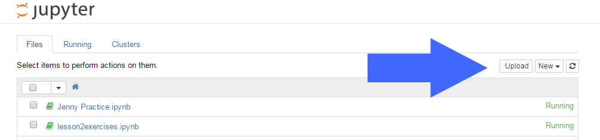

The CoderGirl "Jupyter Temporary Notebooks" server has an idle time-out of 1 hour. The try.jupyter.org server is the same software, but times out after only 10 minutes of ignoring your web browser. That means it can lose your work while you're still thinking about how to solve a problem! Obviously it would be nicer if we could always use the 1-hour idle timeout.
However... if you work on this at home, you might try to work during a time period when the better server is unavailable, and your only option is try.jupyter.org.
The CoderGirl server is currently available during these time windows:
| Day | Available |
|---|---|
| Saturday | 10:00 AM - Midnight |
| Sunday | 10:00 AM - Midnight |
| Monday | 5:00 PM - 11:00 PM |
| Tuesday | 5:00 PM - 11:00 PM |
| Wednesday | 5:00 PM - 11:00 PM |
| Thursday | 5:00 PM - 11:00 PM |
| Friday | 5:00 PM - 11:00 PM |
Running the server only part-time is a cost saving measure. We hope to have it up full time eventually.
So if the CoderGirl server isn't up when you want to work, what do you do intead? You use try.jupyter.org and you upload the lesson files yourself. Be aware that you need to stay active in that web browser session though: try.jupyter.org will decide you've left after only 10 minutes of not doing anything, and it'll drop your files so you have to upload all over again.
Open a new browser tab to try.jupyter.org (right click the link, choose Open Link in New Tab).
Jupyter will show a list of files. Ignore those.
To make the Code For Anyone lesson files available in your jupyter.org session,
you'll need to download them from this web page, and upload them to Jupyter.

To download each lesson file, mouse right-click (Windows) or command-mouseClick (Mac) on a link to "Save link as" a file on your computer.
Pay attention to where your web browser saves each downloaded file. If the computer gives it a ".txt" file extension, change it back to ".ipynb" instead.
Here are all of the lesson files. To run lesson 9, you'll also need the csv file listed at the end.